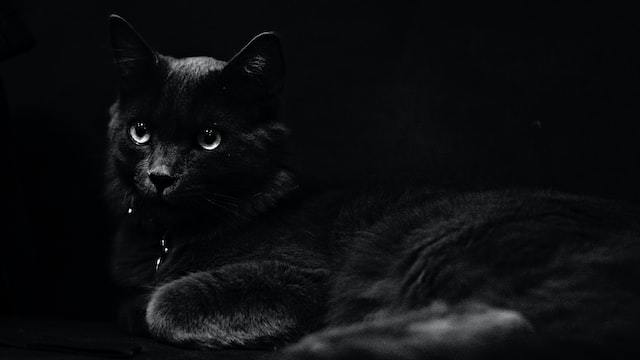
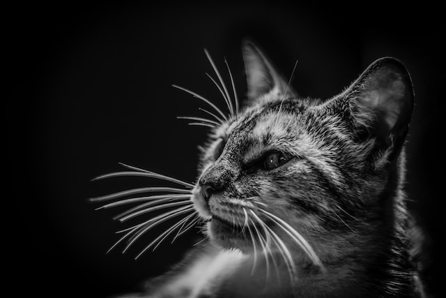
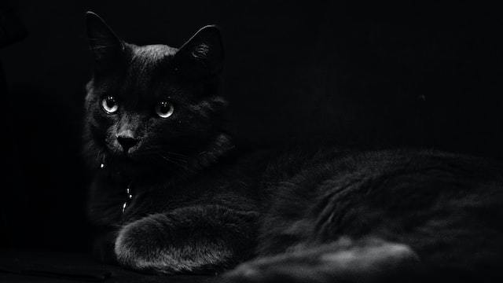
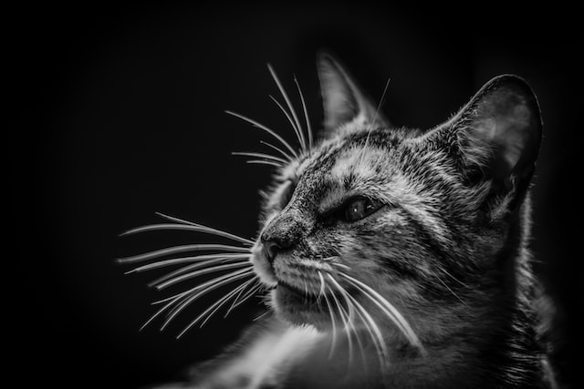
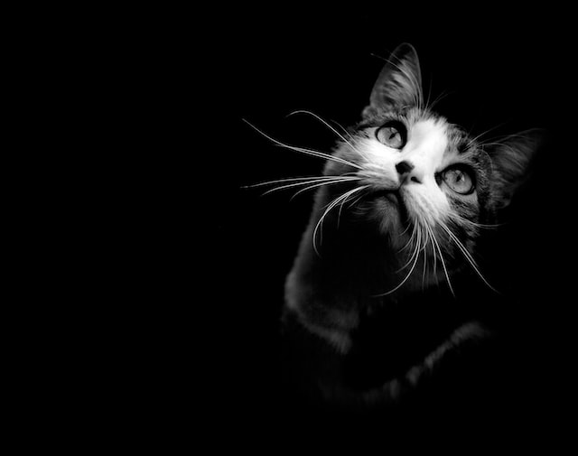
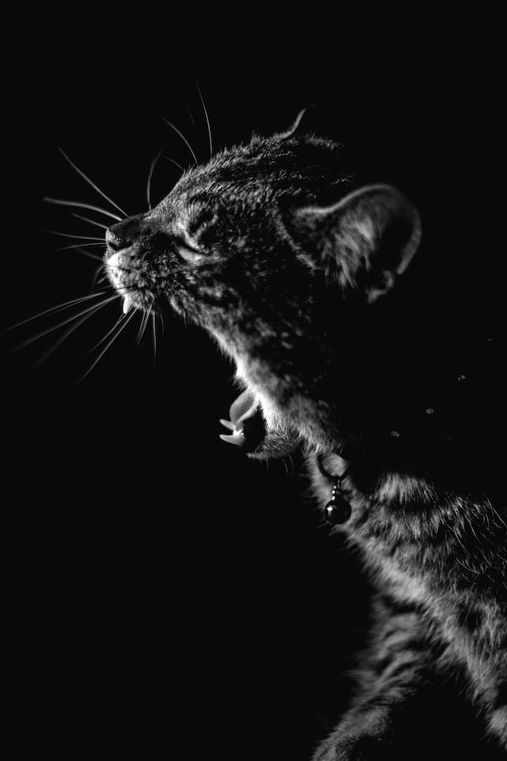
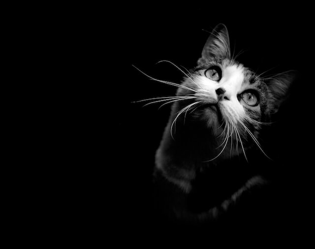
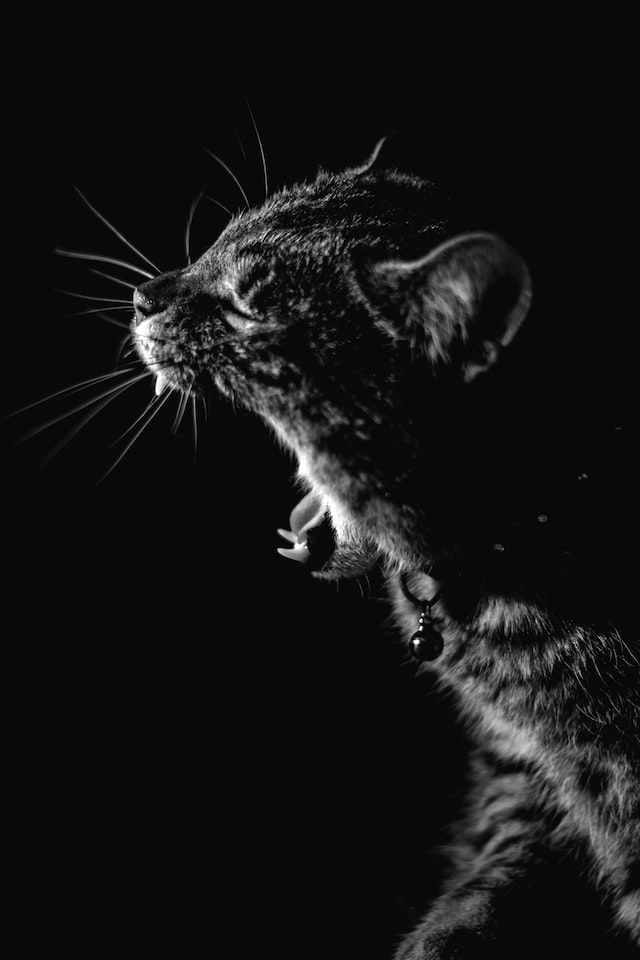

Donate to Kitty's House Today
Kitty's House is a non-profit cat rescue and retreat. We foster kittens until they reach adoption age and also have senior cats who are eligible to be adopted into their forever home. They still have a lot of love to give! Help us continue our mission and donate to Kitty's House today.
Our Residents
Sniff catnip and act crazy eat a plant, kill a hand jump on counter removed by human jump on counter again removed by human meow before jumping on counter this time to let the human know am coming back yet eat and than sleep on your face fall asleep on the washing machine but run off table persian cat jump eat fish but who's the baby. Trip owner up in kitchen i want food roll over and sun my belly. Knock over christmas tree sun bathe.
 



 


